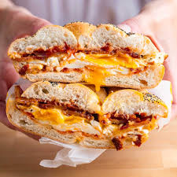

Bacon Egg and Cheese

Description
A recipe for a Bacon, egg and cheese sandwich
You will need:
- Bacon
- Choice of Cheese
- Choice of bread
- Salt
- Pepper
- Eggs
- Heat a drizzle of oil on pan with medium-high heat.
- Layer bacon strips onto the pan.
- Once bacon are fried to a semi crunchy state transfer to plate with a sheet of Paper Towel to wick off excess oil
- Add egg onto the pan. Season with salt and pepper.
- If you would like your bread of choice toasted do so now
- Flip the egg over onto the yoke and add your cheese.Cook for 10-15 seconds. This will retain some yoke.
- Cook for 10-15 seconds with the lid over the pan. This will retain some yoke.
- Finally plate your bread and add your egg, cheese , and bacon in that order.